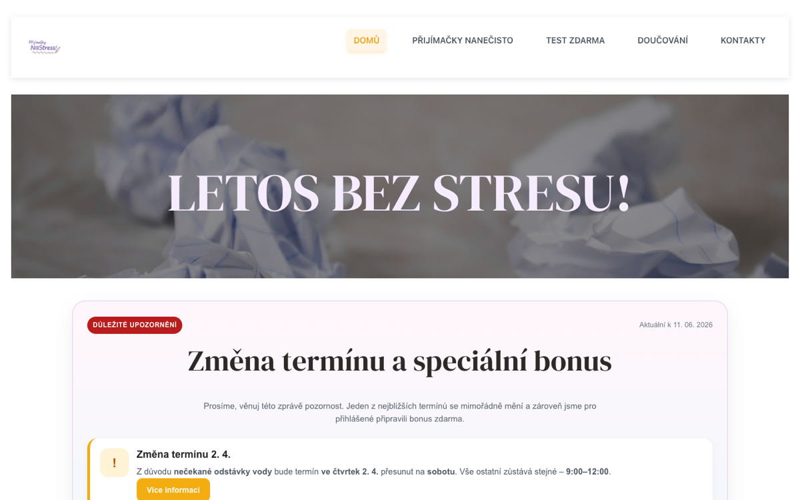
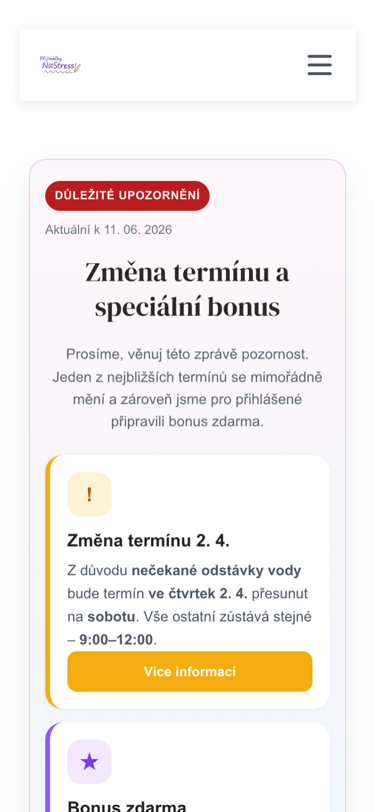
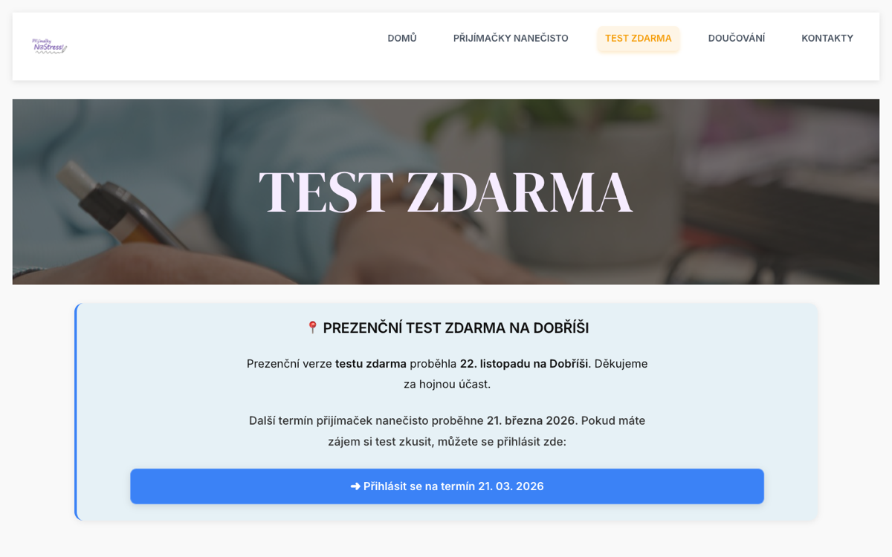
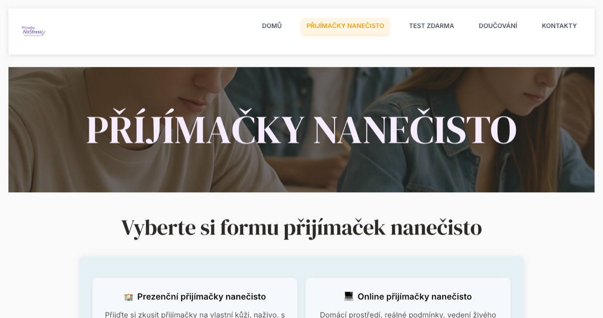
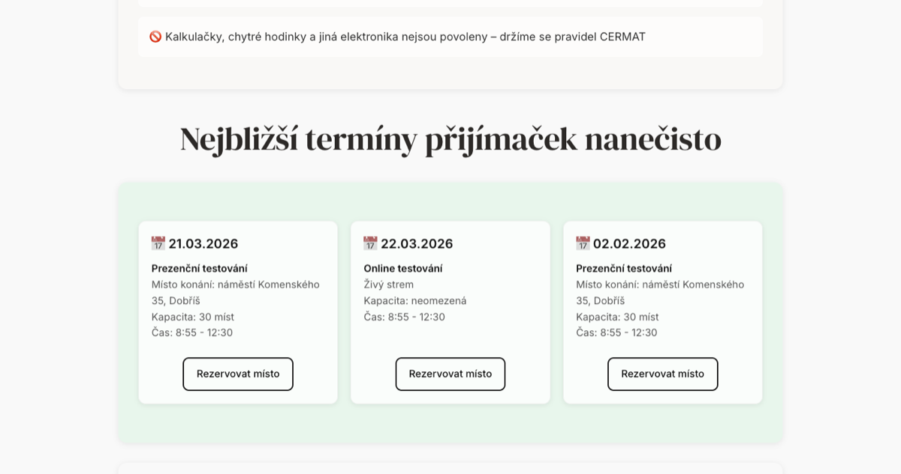
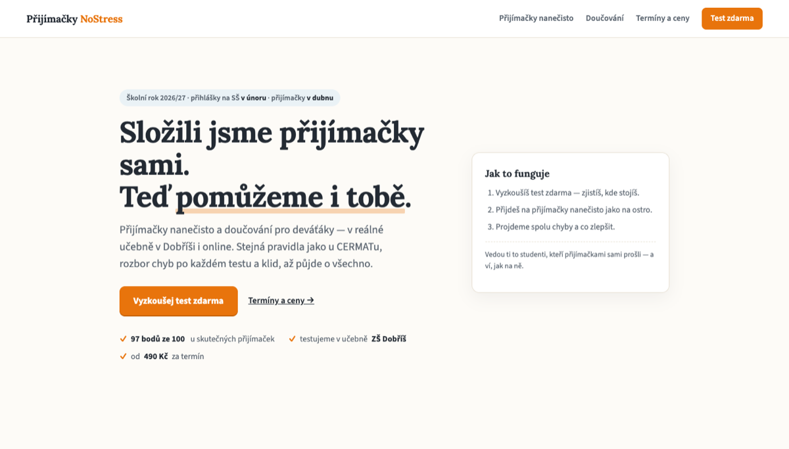

1Executive summary
- You built a real business at 19. Real product, real venue, real payments, real customers. That already puts you ahead of most people who only talk about starting something.
- Your biggest asset is the peer story — "we passed this exam ourselves" — and the site does not use it nearly enough.
- The one urgent thing: the site is frozen in last season. The free-test page thanks November and offers signup for March; the homepage leads with an expired April notice stamped with today's date. Parents researching next year — right now, in June — read this as "they've wound down."
- You do not need a rebuild. The expensive problems are small: a season reset, share previews, a price table, a font fix, a typo, a domain email. Quick wins inside your current WordPress; the blueprint in section 9 is the target picture for later.
- Your market position is genuinely good: the big national players (Scio, online courses) cannot offer a real exam room in Dobříš run by people who just took the exam. Lean into local + personal.
- And one thing beyond the fix list: section 12 shows how AI made this report; section 13 shows how you can do the same for your business — for the price of one ~$20 (≈500 Kč) monthly plan.
How to read the labels in this report: Observed = we verified it ourselves today (June 11, 2026), with a source. Inferred = our professional judgment — reasonable, but check it against what you know.
2What this is (and isn't)
This is an outside-in review of prijimackynostress.cz and the business behind it: mock entrance exams (přijímačky nanečisto), tutoring (doučování), and a free sample test (test zdarma) for 9th-graders preparing for the unified entrance exam (jednotná přijímací zkouška).
It is not a school grade and not a list of demands. It is what a mentor would tell you over coffee, written down with evidence. We looked at your website, your market, and your prices — from the outside. We did not see your bookings, your finances, or your customers' messages. Where we guess, we say so. And from section 11 on, every recommendation also shows how to do it yourself with AI — that part is meant to be useful long after this report.
3What's already working
Praise here is earned, not polite. Each point names its evidence.
A real product with real logistics
ObservedTimed mock exams in both subjects (matematika + čeština) in CERMAT format, with answer keys, video breakdowns, and an anonymous comparison against other students — held in a real school building (ZŠ Dobříš) and online with live proctoring. That is a serious product, not a side hustle. Source: prijimackynostress.cz, June 11, 2026.
The peer-credibility angle
Observed"We just took this exam ourselves — and scored 97 of 100 points" is something no adult-run course can say. Parents buy trust; students buy someone who speaks their language. You have both in one story.
Real testimonials, not marketing quotes
ObservedYour testimonials are real and specific — named students, real schools. That instinct is right: anonymous quotes convince nobody. One important step makes them safe to keep: written parental consent, because the names belong to minors (details in section 5). With consent on file — and a photo — they become your strongest asset.
A visible, fair price for the core product
Observed490 Kč per mock exam session is clearly stated and well positioned for the local market (see section 10). Many competitors hide their numbers; you show yours.
Four social channels + a free-test funnel
ObservedInstagram, Facebook, TikTok and YouTube, plus a free test as the entry point. The structure of a modern acquisition funnel is already there — section 9 shows how to connect the pieces.
4How we structured this review
We used a simple consulting loop that fits a two-person student business: (1) understand the business as it is — only verified facts; (2) audit the website against established UX heuristics (Nielsen) and SEO basics; (3) map the market and prices — only from competitors' own websites; (4) design the target picture — the ground-up blueprint, using the "deep modules" idea from software design (few blocks, each doing one big job); (5) prioritize everything by effort × impact into Now / Next / Later. Evidence rules were strict: every number needs a source from today, and guesses are labeled as guesses.
5What's holding you back
Ordered by how much they cost you, not by how hard they are to fix. Most are easier than they look. Tags: Fix first Real friction Polish later
The site is frozen in last season
Fix firstObservedThis is the big one, and it's sneaky because every page technically works. Today (June 11): the free test page thanks participants from November and its main button invites signup for March 21 — three months ago. The homepage opens with an "important notice" about an April session change — auto-stamped "Aktuální k 11. 06. 2026", so old news shows today's date. The booking page lists mostly past dates. A parent of a next-year 9th-grader — researching right now, in June, for autumn — concludes you've wound down.
The fix: a season-rollover ritual (one checklist, twice a year), auto-hiding past dates, and an evergreen free test — delivered by email instead of tied to an event — so the funnel works year-round. Section 9 builds on exactly this. Screenshots in section 6; /testzdarma/ and homepage, June 11, 2026.
Shared links show nothing
Fix firstObservedYour pages have no social preview tags (Open Graph — what makes a shared link show a picture and a title) and no meta descriptions (the short text Google shows under your link). When a parent shares your link in a class WhatsApp group or on Facebook — your single most important growth channel — it appears as a bare URL: no image, no title, no text. Every share works at a fraction of its potential, and you cannot see it happening.
The fix: a free SEO plugin (Rank Math / Yoast) + one preview image + a one-sentence description per page. About an hour of work. Checked: no og: tags, no meta description on any page, June 11, 2026.
Your font silently fails to load
Fix firstObservedThe site requests its main font (Roboto) over insecure HTTP from inside an HTTPS page. Browsers block this — we counted 10+ blocked requests on the homepage. Cautious browsers (often exactly the ones careful parents use) show a fallback font instead of your design.
The fix: regenerate the Elementor local fonts cache so URLs use HTTPS — a settings toggle, minutes. Browser console: "Mixed Content … blocked" ×10, June 11, 2026.
You cannot see what works
Fix firstObservedFrom the outside, we could not detect any analytics — no Google Analytics, no tag manager, nothing visible. (If you run something invisible to us, ignore this one.) Without it, you cannot answer the most basic business question: where do bookings come from? Instagram? The school corridor? Google? Every marketing hour you spend is unmeasured.
The fix: install GA4 (or a simpler privacy-friendly tool) + connect Search Console. One evening; then ignore it except once a month. Checked: no gtag/GTM/analytics scripts in page source, June 11, 2026.
Google can't show your best content
Fix firstObservedNo structured data (schema.org) anywhere — yet you have everything it rewards: a local business with an address, dated exam sessions, a 490 Kč product, and FAQ sections. With markup, Google can show your dates, price, and FAQ directly in search results; without it, you're a plain blue link next to Scio.
The fix: the same SEO plugin from the link-preview fix above does LocalBusiness + FAQ markup with configuration, not code. Checked: zero ld+json blocks site-wide, June 11, 2026.
A typo in your main product headline
Real frictionObservedThe big headline on your core product page reads „PŘÍJÍMAČKY NANEČISTO" — it should be „PŘIJÍMAČKY". A spelling mistake in the one word your business is named after, on the page where parents decide — for a company that teaches Czech, this one matters double. (Related: the homepage browser title is 127 characters; Google cuts it at ~60.)
The fix: two minutes in Elementor. H1 on /prijimackynanecisto/, June 11, 2026.
Package prices are hidden; tutoring has no anchor
Real frictionObservedSingle session: clear, 490 Kč. But multi-session packages say only "discount" with no numbers, and tutoring (doučování) says "price is always individual." A comparing parent gets no anchor for your higher-value services at exactly the moment they're choosing. Hidden prices read as "expensive" — even when yours aren't.
The fix: a simple price table (1 / 3 / 6 / 9 sessions) and "doučování od X Kč / 60 min." /doucovani/: "Cena je vždy individuální…", June 11, 2026.
Two different buying experiences
Real frictionObservedA single session is bought through a proper checkout (WooCommerce). But packages — your bigger sale — go through a Google Form: no confirmation, no payment step, manual follow-up. The more a parent wants to spend, the more improvised the purchase feels.
The fix: make packages normal WooCommerce products with visible prices. /vyber-terminu-prezencne/: forms.gle links for bundles, June 11, 2026.
The legal layer needs one honest afternoon
Real frictionObservedThree related gaps: (a) no business ID (IČO) anywhere on the site — Czech rules normally require it for businesses selling online, so confirm your registration setup and show the number; (b) no cookie consent mechanism, even though the shop processes personal data; (c) testimonials show full names of students who are very likely minors — under GDPR that needs explicit parental consent you can show. None of this is dramatic — it is the normal early-stage list every young business cleans up once — but a careful parent (or a competitor having a bad day) could make it expensive.
The fix: add IČO to the footer + contact page (if registration isn't sorted yet, this is the nudge — it's quick and cheap); install a consent plugin; switch testimonials to "Václav S." format or collect written parental consent for names and photos. /kontakty/ has no IČO; no consent plugin detected; full names on homepage — June 11, 2026.
The contact email: Gmail instead of your own domain
Real frictionObservedprijimackynostress@gmail.com is the only contact address. You own the domain — an address like ahoj@prijimackynostress.cz costs little, forwards to the same Gmail inbox, and removes a quiet "is this a real company?" doubt for paying parents.
Contact address on /kontakty/ and homepage, June 11, 2026.
The site is heavy and slow to start
Polish laterObservedFirst byte took ~3.5 seconds and the homepage HTML alone is 223 KB with 30+ scripts (WordPress + Elementor + WooCommerce stacking up). Cache is active, but mobile users on school Wi-Fi will feel it. Real, but fix it after the items above — and the free-test page (test zdarma) deserves uptime monitoring, since our very first automated check of it failed while later checks passed (details in the appendix).
The fix (later): image compression, plugin diet, and a free uptime monitor pinging the free-test page. curl timing: TTFB 3.48 s, 223 297 bytes, June 11, 2026.
6UX/UI audit
How we audited: an automated browser captured your pages at desktop and mobile sizes; an accessibility engine (axe-core) scanned the homepage; and we ran a 20-point design checklist plus a usability walkthrough in the style of Steve Krug's "Don't Make Me Think."
First, credit: the accessibility scan found zero critical violations (just two minor warnings — heading order and duplicate landmarks). Many professional sites fail this. axe-core via headless Chrome, June 11, 2026.
The 20-point design checklist flagged 9 of 20 points — mid-range. One honest caveat: this is a heuristic checklist, not a law of nature. It can't see your customers, and it scores conventions, not taste. We use it to find discussion points, not to grade you.
- What passed: spacing and alignment are consistent, content widths are readable, the layout adapts properly to mobile, your section cards have character, no tacky gradient buttons.
- What the checklist flagged, in order of impact: no clear call-to-action above the fold (the part visible before scrolling); the hero — the big top banner of the homepage — is a stock-photo-with-slogan pattern that says mood but not offer; body text is Roboto (the default font of the internet — your display serif has personality, your body text doesn't); call-to-action colors change from section to section (orange, black, blue, green); icons mix emoji with line icons.
What a first-time parent actually sees





Five usability observations (Krug walkthrough)
- The homepage knows who you are, but not what it wants from the visitor. Looking at the first screen: logo, menu, "LETOS BEZ STRESU!" — and then an operations notice. My eye searches for "what do I do here?" and finds nothing until I scroll. Every landing visit starts with admin noise instead of the offer. Change: top banner (hero) = one sentence of offer + one button (the free test). Announcements move to a thin banner.
- The three-second test fails on the slogan. "This year without stress!" sets a mood but a rushed parent can't tell in three seconds: exam prep, 9th grade, Dobříš, from 490 Kč. The information exists — lower on the page. Change: subheadline that says who/what/where in plain words (section 9.6 has three drafts).
- The highest-intent moment splits into two doors. Booking a single session opens a proper checkout; booking a package opens a Google Form. The buyer with the most money to spend gets the most improvised path — a classic "wait, which one?" moment at exactly the wrong time.
- Stale dates drain trust silently. Past sessions presented as "nearest dates" + an expired notice stamped with today's date = the site looks abandoned even though the business isn't. For a service parents trust with their kid's future, "is this still running?" is the most expensive doubt possible.
- The footer is missing its trust signals. Where a careful parent looks last before paying — the footer — there's a Gmail address and no business ID (IČO). Both fixable in an afternoon; both quiet credibility leaks today.
7A mini style guide
Inferred — a proposal, not a law. The goal: keep your warm, student-friendly personality, but make it consistent. Everything below can be set once in Elementor's Global Colors & Fonts and then just… holds.
The one rule that matters most
One action color. Today your buttons and links switch between orange, black, blue and green. Pick one — we suggest the orange you already use — and let it mean exactly one thing everywhere: "this is what you click next." When everything is special, nothing is.
Colors
- Cream
#FDFBF7
page background - Ink
#232A33
text (never pure black) - Soft ink
#5B6570
secondary text - Orange
#E8740C
the action color - Deep orange
#C45F05
hover / pressed - Sky
#EAF2F6
one calm support tint - Line
#E7E0D2
borders & dividers
That means retiring the per-section pastel rainbow (peach / blue / green / purple cards). Two background moods — cream and sky — create calm; four create noise. Calm is literally your brand name.
Type
- Headlines: Lora (600/700) — a warm serif with full Czech diacritics, free on Google Fonts. Keeps the bookish personality your current serif headlines already have.
- Body: Source Sans 3 (400/600) — replaces Roboto (the internet's default font, and currently failing to load anyway — see the font finding in section 5). Friendly, very readable at 17–18px.
- Rules of thumb: two families total, max four weights, headlines tight (line-height ≈ 1.15), body relaxed (≈ 1.6), body text never below 16px.
Spacing & components
- Spacing scale: multiples of 8 px (8 / 16 / 24 / 32 / 48 / 64). Related things sit close (8–16); sections breathe (64–96). Set Elementor section padding once and reuse.
- Buttons: exactly two kinds. Primary = filled orange, rounded 10 px, bold. Secondary = plain ink text with an arrow ("Termíny a ceny →"). Delete every other button style.
- Cards: white, thin
#E7E0D2border, 14 px radius, one soft shadow. Never a card inside a card. - Voice: keep the friendly „ty" for students — it's your peer brand. Just keep it consistent (the site currently mixes registers between pages).
The hero mockup below uses exactly these tokens — it's the style guide, rendered.
8Homepage top banner (the "hero"): before & after
The hero is the first screen of a website — the part a visitor sees before any scrolling. One screen, redesigned for the question every visitor brings: "Is this for my kid, and what do I do next?"

The four moves, and why
- The headline says the one thing only you can say. „Složili jsme přijímačky sami. Teď pomůžeme i tobě." — your unfair advantage, in the first second. „Letos bez stresu!" becomes the supporting promise, not the whole message.
- One orange button: the free test. The single lowest-risk next step for a new visitor, top right in the nav and front-center in the hero. Everything else is a quiet text link.
- The trust row — the line of proof points under the headline — answers the three parent doubts at once: does it work (97 of 100 points), is it real (a real classroom at ZŠ Dobříš), what does it cost (from 490 Kč). No scrolling required.
- The season chip replaces stale announcements. „Přihlášky v únoru · přijímačky v dubnu" is true all year and quietly says we know the calendar that rules your family's next 10 months. Operational notices move to a thin banner only when actually current.
Try the live version on your phone — it's built mobile-first, because that's where parents will see it (today's mobile homepage opens with an expired notice instead; see section 6).
9The ground-up blueprint
Inferred — this whole section is design judgment, grounded in what we observed on your site and in your market.
No rebuild needed now. This is the target picture for when you outgrow the current site. Every first move below is a quick win inside your existing WordPress + Elementor. Do not rebuild to act on this.
9.1 Five quick wins inside WordPress (this month)
- Show package prices as a simple table — 1 / 3 / 6 / 9 sessions (termíny) with real Kč numbers. A hidden price is a lost booking.
- Switch to a domain email (e.g.
ahoj@prijimackynostress.cz) — it looks more professional to paying parents, and Gmail can keep receiving everything behind it. - Add a photo and school logo to each testimonial — with the student's and parent's permission. Names are already there; faces push credibility much further.
- Install a free SEO plugin (Rank Math or Yoast) and fill in page titles, descriptions, and LocalBusiness + Course + FAQ structured data (schema.org). Zero design work.
- Make the free test bullet-proof — one clear button on the homepage, a stable URL, and a check that the form really delivers the test and saves the email. It is the top of your whole funnel.
9.2 The sitemap: 8 pages, each with one job
The idea: every page catches one kind of visitor intent (a search, a social click, a recommendation) and has exactly one main action.
| Page | Whose job it does | Target search (CZ) | Main action |
|---|---|---|---|
| Domů (Home) | Anyone — orient & route | „přijímačky nanečisto" | Try the free test |
| Přijímačky nanečisto (Mock exams) | Parent decides, student attends | „přijímačky nanečisto Dobříš" | Book a date (490 Kč) |
| Termíny & ceny (Dates & prices) | Parent — remove price friction | „přijímačky nanečisto cena" | Pick a date |
| Test zdarma (Free test) | Student tries, parent gives email | „test na přijímačky zdarma" | Get the free test |
| Doučování (Tutoring) | Parent — higher-value upsell | „doučování na přijímačky" | Arrange tutoring |
| Výsledky & recenze (Results & reviews) | Parent — proof it works | „kurz na přijímačky recenze" | Start with the free test |
| Jak to funguje / O nás (About) | Parent — trust two 19-year-olds | „příprava na přijímačky 9. třída" | Write to us |
| Blog / Rady (Advice) | Parent + student — search, all year | „jak se připravit na přijímačky" | Free test |
A ninth page — entrance exams for víceletá gymnázia (the multi-year grammar-school track, 5th grade) — joins the map when that product is ready. Don't build the page before the product.
9.3 Modules and seams: build from a few deep blocks
From software design (John Ousterhout): build from a few blocks that each do one big job behind a simple face. You drop a block into a page and fill in a short form — you never rebuild the logic. This applies to your content too: one testimonial format reused everywhere beats ten hand-made quotes.
- HeroBlock (the top banner) — headline + subline + one button. Reused at the top of every page.
- PriceTable — session + package prices from one source. Edit once, updates on Home, Mock exams, and Dates & prices.
- TrustStrip — thin row under the hero: schools, student count, rating.
- TestimonialCard — quote + full name + school + photo + permission flag. The single shape behind Reviews and the homepage.
- LeadMagnetForm — email in → free test out, saved to your list. One funnel entry, used on Home + Test zdarma.
- ExamCountdown — days until applications (přihlášky, ~February) and exams (~April). Quiet urgency, reused site-wide.
- FAQBlock — collapsible questions; also feeds FAQ structured data for Google.
9.4 The acquisition funnel
The funnel is the sitemap walked top to bottom:
| Stage | Where it lives | What to count (monthly) |
|---|---|---|
| 1 · Free test (test zdarma) | Test zdarma page + form | form submits |
| 2 · Email list | your email tool | open rate |
| 3 · Mock exam booking | Mock exams + Dates & prices | orders (WooCommerce) |
| 4 · Results email + weak spots | email after each session | replies |
| 5 · Tutoring (doučování) | Tutoring page | requests |
| 6 · Next year: 5th-grade track | future page | — |
The seasonal clock matters more than any tactic: demand climbs from autumn to April. Applications (přihlášky) are due around February; exams run in April. So: push the free test and blog content September–November to build the email list early, sell mock exams hardest December–March, and pivot to last-minute tutoring March–April. Summer is for building content and the 5th-grade track.
9.5 Platform: stay on WordPress (for now)
You already run WordPress + Elementor + WooCommerce: booking and card payment for a 490 Kč session work today, and you can edit pages yourselves between your own exams. Your real problems — package price visibility, trust signals, Gmail, missing structured data, a fragile free-test path — are content and settings fixes. Switching platforms would not fix a single one of them.
A static or managed site (Framer, Webflow, plain HTML) would buy you speed, fewer moving parts, and near-zero maintenance — but it costs a full rebuild during your own exam year, and you would have to re-solve booking and payments, which WooCommerce already handles. Recommendation: stay on WordPress now. Spend the saved effort on the five quick wins and one blog post a month. Revisit only if WordPress upkeep starts eating real time.
9.6 Three headline directions for the top banner (drafts to discuss)
- Peer-proof: „Složili jsme přijímačky sami. Teď pomůžeme i tobě." (We passed the entrance exams ourselves. Now we'll help you too.) — turns "two 19-year-olds" from a doubt into the reason to trust you.
- Outcome: „Dostaň se na střední, kterou si vybereš." (Get into the high school you choose.) — names the real goal the parent is paying for.
- Brand promise: „Přijímačky nanečisto — bez stresu, s jistotou." (Mock entrance exams — no stress, with confidence.) — pays off your name and reframes the scariest moment of 9th grade.
10Market & prices
Strict rule for this section: a price is only listed if we found it on the competitor's own website today (June 11, 2026). "Price not public" means exactly that — and it happens a lot, which is interesting in itself.
| Who | What they sell | Price (CZK) | Grades | What to learn — or ignore |
|---|---|---|---|---|
| to-das.cz | Weekend mock exams (21/season) + app + parent webinars | 14 500 / season ≈ 690 / session |
5. 7. 9. | Learn: their ~690 Kč per session makes your 490 Kč a real bargain — say it out loud. Ignore: the app and webinars; wrong scale for two people. |
| Scio.cz | National brand: courses, tests, mock exams | not public* | 5. 7. 9. | Learn: parents search "Scio" by name — brand trust took years. Ignore: their breadth; their 9th-grade mock-exam line is surprisingly hard to navigate — your focus is the advantage. |
| prijimacky-onlinekurzy.cz | Online video courses + simulations, access until exam day | not public | 4.–9. | Learn: "access until exam day" framing removes urgency objections. Ignore: fully online — exactly what you differentiate against. |
| zkousky-nanecisto.cz | 22-week live courses + mock exams + camps | not public | 3.–9. | Learn: long courses serve a different buyer (season-long commitment). Frame your sessions as "try before you commit" or "alongside your course". |
| dostansenagympl.cz | Live online courses, groups of max 10, recordings | not public | 5. 7. 9. | Learn: "max 10 students" is premium positioning — your in-person intimacy deserves the same explicit framing. |
| umimeto.org | Freemium adaptive practice app | free tier | 1.–9. | Learn: recommend it as a homework tool — it makes you the helpful expert, and a mock exam is the natural next step it can't offer. |
| statniprijimacky.cz | Free practice tests + paid courses | tests free | 5. 7. 9. | Learn: free tests as lead magnets are everywhere — your free test must lead somewhere (email → booking), not just exist. |
| You (for reference) | In-person mock exams at ZŠ Dobříš + online + tutoring | 490 / session | 9. (5. soon) | The only one on this list with a visible per-session price and a real exam room outside Prague. |
*Scio's own pages redirected in circles today (multiple 301→404 chains) — we could not confirm a price from their site. All "not public" entries: checked the company's own site on June 11, 2026; several price pages returned 404. Full notes in the appendix.
Where you win — and where you honestly don't
- You win on price and entry barrier. Observed A family can try you for 490 Kč. The market leader asks 14 500 Kč upfront. That is not just cheaper — it is a completely different decision for the parent: no sunk cost, no leap of faith.
- You win on geography — if you say it loudly. Observed Every national player is online or big-city. A real exam room at ZŠ Dobříš with zero commute is something they cannot copy without local partners. Right now the site whispers this; it should shout it.
- You win on peer credibility. Observed "Scored 97 of 100 points on this exact exam" beats "our experienced lecturers" for a 15-year-old. No national brand can say it.
- You lose on breadth and continuity. Observed Season-long courses with homework support (to-das, zkousky-nanecisto) serve families who want full-service prep. Don't chase them — position as the honest check-up: "find out where you really stand, before or alongside any course."
- You lose on search visibility — for now. Inferred Years of SEO put the big brands first on Google. Your channel is the one they can't use: school corridors, class WhatsApp groups, teachers, and the Dobříš word-of-mouth network. Treat local presence as your main distribution, with the website as the place it converts.
The exam calendar is your marketing calendar. Observed For school year 2025/26: applications (přihlášky) ran February 1–20 via the state digital system (DiPSy); main exams were April 10 & 13 (9th grade) and April 14–15 (víceletá gymnázia). 2027 dates were not published as of today — expect the same pattern. Source: prijimacky.cermat.cz, June 11, 2026.
What it means: the decisive buying window is October–January. Be visible and running sessions by October. Expect a second panic spike in March from families whose January mock results scared them — have March dates and tutoring capacity ready in advance.
The local picture (Dobříš / Příbram / Beroun)
Inferred We could not properly map local competition today — the tutor marketplaces (doucuji.eu, naucmese.cz) blocked automated checks, and no school-run prep course (přípravný kurz) in the corridor was findable. The absence of visible organized local competition is consistent with your founding story, but it is unconfirmed. First low-risk experiment: 30 minutes of manual searching + one question in a local parents' Facebook group tells you more than any tool we ran today.
11Roadmap: Now / Next / Later
Everything above, turned into a sequence two students can actually do. Effort is honest; impact is our judgment Inferred. Each row points back to its evidence. New in this version: every row carries a With AI line — how to do the task with a ~$20 AI chat plan. Those lines assume the ten-minute business file from section 13, and any time notes in them are honest estimates, not promises.
Now June — wake the site up (≈ 2–3 evenings total)
| Do | Effort | Why |
|---|---|---|
| Season reset: make the free test evergreen (delivered by email, not tied to an event), auto-hide past dates, retire the April notice With AI: paste the page text into your AI. Ask for an evergreen version plus a list of every dated detail it found. Check that list against the live page yourself, then edit in Elementor. | 1 evening | The frozen-season finding — next-year parents are searching now, and the site tells them you're gone |
| SEO plugin (Rank Math/Yoast): meta descriptions, share images (OG), short titles, LocalBusiness + FAQ markup With AI: for setup, ask for steps for your exact WordPress and paste errors back. Then per page: give it your business file and the page text, ask for three meta descriptions under 155 characters — pick one; you know your parents best. | 2 hours | The link-preview and rich-results findings — makes every WhatsApp share and Google result work for you |
| Fix the font loading (regenerate Elementor fonts over HTTPS) + the „PŘÍJÍMAČKY" H1 typo With AI: ask for click-by-click steps to regenerate Elementor's fonts over HTTPS; paste a screenshot if you get stuck. The typo is faster by hand. | 30 min | The font and typo findings — visible quality, trivial cost |
| Install GA4 + Search Console With AI: ask for a step-by-step for your exact site and do it together, pasting anything confusing back. Then once a month: paste the numbers in and ask what changed. | 1 evening | The analytics finding — you can't improve what you can't see |
| Legal afternoon: IČO in the footer, cookie consent plugin, testimonial consent or „Václav S." format With AI: it drafts the Czech parental-consent form and a cookie-plugin shortlist — drafts only: have an adult you trust read the consent text before you use it. | 1 afternoon | The legal finding — cheap now, expensive later |
| Domain email (ahoj@…) forwarding to Gmail With AI: mostly clicking in your domain admin. Ask for the exact steps for your provider; paste errors when stuck. | 1 hour | The email finding — quiet trust signal at the front door |
Next July–September — build for the season (≈ 3–4 days spread over summer)
| Do | Effort | Why |
|---|---|---|
| New hero (the homepage top banner) + one action color per sections 7–8 (the mockup is a working start) With AI: show it the section-8 mockup and your current page; ask for an Elementor build checklist. Build one block at a time, comparing against the mockup after each. | 1–2 days | Audit — the first screen finally sells |
| Visible price table (1/3/6/9 sessions) + packages as real checkout products + „doučování od X Kč" With AI: the price levels are your call — ask for three package-pricing options with reasoning, never for the decision. Then give it your final prices and ask for clean table copy. | ½ day | The pricing and checkout findings — removes friction exactly where money changes hands |
| Google Business Profile + Mapy.cz listing With AI: ask for the exact setup steps for both listings; let it draft your business description from the business file — then trim it until it sounds like you. | 1 evening | Section 10 — "doučování Dobříš" on the map likely beats classic SEO locally |
| Email nurture: welcome email + monthly tips for the free-test list With AI: write the welcome email yourself in five sentences first. Ask for two friendlier variants and one shorter one. Send the one that sounds like you — because it is. | ½ day | Section 9.4 — turns the lead magnet into bookings by October |
| Two blog posts before October („Jak se připravit na přijímačky 2027", „Termíny, přihlášky a DiPSy 2027") With AI: first write five bullets yourself — what you would tell a parent. Then ask it to grow them into a draft. Fix every line that does not sound like you. | 2 evenings | Section 9.2 — the only channel that compounds; September searches start it |
| Collect consented photo testimonials at autumn sessions (a one-page consent form) With AI: it drafts the one-page consent form and the message to parents; collecting signatures and photos is human work — yours. | ongoing | The legal finding + section 3 — your strongest proof, made legal and stronger |
Later the season & beyond (when the above holds)
| Do | Effort | Why |
|---|---|---|
| Výsledky & recenze page with real score improvements | 1 day | Section 9.2 — the trust anchor every page links to |
| 5th-grade track (víceletá gymnázia) when the product is ready | product first | A second audience with the same machine — don't build the page before the product |
| Season-rollover checklist + free uptime monitor | 1 evening | The frozen-season finding, permanently solved as a ritual, not a memory |
| Performance diet (image compression, plugin cleanup) | 1 day | The speed finding — after the funnel works |
| Local partnerships (teachers, schools, DDM in the Příbram–Beroun corridor) | ongoing | Section 10 — the distribution channel the national brands can't copy |
If you do only three things: the season reset, the SEO plugin, and the price table. One week of evenings, and the site goes from "are they still running?" to "this is exactly what we need, and it costs 490 Kč to find out." Every one of them has a With-AI line above — none needs more than a basic AI chat plan.
12How this report was made
This report is also a demo. Version 1 was made in one afternoon by one person directing a team of AI tools; this version added a second working session. We document it honestly — including what failed — because the same approach can work for your business, and section 13 shows how.
The toolchain, and what each tool actually did
| Tool | Role | What it contributed here |
|---|---|---|
| Claude Code (Anthropic, Fable 5) | Orchestrator + writer | Planned the engagement, ran three parallel research agents (site audit · market & prices · blueprint design), synthesized everything, designed and wrote this page. |
| Codex CLI (OpenAI) | Adversarial reviewer | A genuinely different AI reviewed the work three times. Round 1, the plan: 13 findings, including "add a backup publishing path" and "protect student names in screenshots — they may be minors." Round 2, the finished report: 12 findings — a self-contradiction between two sections, broken cross-references, claims stated stronger than the evidence. Round 3, the new self-help sections you're reading now: 10 findings — mostly claims about what a $20 AI plan can do, stated too strongly, softened before publishing. A second model catching the first model's blind spots is the single most useful pattern in this whole setup. |
| Gemini (Google) | UX-research reviewer | A third AI reviewed the finished page like a user researcher: where a non-native reader loses the thread, which jargon needed plain-language glosses, how the long page navigates. Several of its findings shaped the final polish — including the "back to contents" links you may have just used. |
| Grok (xAI) | Real-time research | Honest note: we tried to use it for practitioner research and hit a quota wall. It contributed nothing today. We say this because trust in section 5 depends on honesty in section 12. |
| Impeccable (open-source design skills) | Design reference | Typography, layout, and polish principles applied to this page and to the style guide in section 7 — e.g. "no default fonts," "spacing rhythm over decoration," "tinted neutrals, never pure gray." |
| Puppeteer + heuristic checklist | Evidence capture | Automated browser screenshots of your site (desktop + mobile) and a 20-point design checklist run against the homepage — the evidence base for section 6. |
The working rules that mattered more than the tools
- Every claim is tagged Observed or Inferred, and every number carries a source with today's date. AI tools confidently make things up; this discipline is the antidote.
- A second AI reviews the first. Same-model review tends to agree with itself; cross-model review (Claude ↔ Codex) reliably finds real problems.
- A human reads everything last. Mark reviewed this page end-to-end before you got the link. AI drafted; a human signed.
What making this actually required
Honestly: a paid AI-coding setup (Claude Code), a second AI (Codex) for cross-review, an automated browser for evidence — and the real ingredient, a practiced workflow built over many months. Mark's full setup is public if you're curious: the factory overview. Read it as the endgame museum, not the entry fee. You need none of it to start.
Could a ~$20 chat plan do this? Mostly yes — by hand
The honest split is by hand vs. automated, not possible vs. impossible. A paid chat plan (Gemini, ChatGPT, Claude) can do the thinking parts of this report: reason about a website's weaknesses, draft every text, critique work you paste into it, and help research a market when you paste in the sources or it has web access — the fact-checking stays yours. It can even give you a second opinion: paste the same work into a different AI. What our setup added was automation: many research agents working at once, browser screenshots taken automatically, review gates that run every time, one-command publishing. That changed the speed and the strength of the evidence — not the intelligence. Which is exactly why section 13 exists.
What more access would have improved (customer interviews, your analytics, mystery-shop pricing) is listed in appendix C.
The session, replayed — and the full log
The honest shape of the working day, measured from the session records (not memory):
- 12:19 — Mark briefed the AI in one casual message, and answered four scoping questions back.
- 12:58 — work started; a placeholder page was live on the web at minute seven, so publishing could never fail at the deadline.
- 13:01–13:14 — three research agents ran in parallel (site audit, market & prices, blueprint).
- 13:19–15:43 — Mark left to travel, offline; the session wrote, reviewed (Codex round 2), fixed, and shipped version 1 at 15:36 — while he was on the road.
- 15:54–19:06 — human time: reading, meeting, thinking. The AI waited. Roughly 40% of the 8-hour day was human attention, not AI work — an honest number nobody usually shows.
- 19:06–20:20 — one steering message from Mark created this version: research, rewrite, three review lanes, live.
In total: 7 operator messages, 11 helper agents, 4 cross-model reviews, ~190 tool actions, one working day.
Want the real thing? Every prompt, every correction, every mistake — including the agent instructions you could reuse for your own business — is published in the full session log. It is long and unpolished on purpose; open it only if you actually want to see the work. Open the full session log →
13Doing this yourself, with AI
Skills that outlast the models. Inferred — this section is our working advice; treat it like advice from a friend who does this daily, not like a law.
You already use AI to ask questions. This section is about the next step: using it for real, accountable work — pages parents will read, emails that book sessions. The method has a name: assisted self-paced learning. Your business is the course. Real tasks, your own money and time at risk, results you can check within a week. We show the basic method and the common mistakes; you set the pace. There is no syllabus — AI is learned by doing, not by reading about doing.
One honest note before the practical part: several times in the past year, a different tool briefly had the strongest model. That is normal now. So don't build your habits on one brand — build the things that move with you: a context file, a verification habit, your own judgment. A ~$20/month (≈500 Kč) plan on any major tool — Gemini, ChatGPT, or Claude — is enough to start every workflow in this section and in section 11's "With AI" lines; a few go faster with web access or higher limits, and you will know when you hit that. On heavy days you will hit a usage limit and wait a few hours: a scheduling problem, not a wall. And your cybernetics background helps: this is systems and feedback loops, applied.
13.1 The first hour: two things you'll reuse in any AI tool
1 · The business file. Write a short note (any notes app) and paste it at the start of every AI chat, in every tool:
- What we sell: mock exams (přijímačky nanečisto) at 490 Kč, in Dobříš and online; individual tutoring (doučování)
- Who buys / who attends: parents of 9th-graders decide; the students attend
- Our voice: friendly, student-to-student, informal Czech („ty")
- Constraints: two founders, our own school workload, WordPress + Elementor, small budget
- This season's goal: one line — see below
Ten minutes, once. It makes every answer measurably better, and it is the beginner version of what professionals call a context harness — it works the same in every tool, today and after the next model change.
2 · The mission line. The first line of that file is the season's business outcome: „Naplnit podzimní termíny." (Fill the autumn dates.) "Learn AI" is not a mission — it has no finish line. Fill the dates using AI, and the learning happens on the way.
The habit that compounds: whenever an AI result surprises you — good or bad — add one line to the file about what worked. Three months of those lines teach you more than any course.
13.2 Four skills, shown by this report
The names in parentheses come from Anthropic's free AI Fluency course (there is a students edition). The skills themselves are tool-independent.
Handing off (Delegation)
Before any task, one check: is it downhill — clear, with a result you can verify ("rewrite this page", "list every dated detail")? Hand it to AI. Is it uphill — vague, no way to check ("what should our price be")? Think first; ask AI for options, never for the decision. This report handed data-gathering and screenshots to AI agents; every verdict stayed human. Your turn: the season-reset row in section 11.
Explaining (Description)
AI quality tracks the quality of what you tell it. This report ran on a folder of context files about your business; your business file from 13.1 is the same thing at one-page scale. The difference between a generic answer and a useful one is usually the context, not the model. Your turn: the meta-descriptions row in section 11.
Judging (Discernment)
Treat every AI claim as a draft until you check it. Our own first automated check said your free-test page was dead — the verification rule caught the error, and the finding got better instead of louder (appendix A tells that story honestly). One more exercise worth a single evening: run the same real task in two different AIs and compare. You will learn more about both tools — and about the task — than any review article can tell you.
Staying responsible (Diligence)
AI drafts; the person who publishes answers for it. This rule appears twice in this report: once as a finding about your site (students' full names in testimonials — section 5), and once in how the report itself was made — a second AI flagged student names visible in our screenshots, and a human removed them before anything went online. Same rule, both directions.
13.3 Keep going
If you want a guided start, one pointer is enough: couchto5k.ai — free at the time of writing (June 2026), about 10 minutes a day, designed for any major AI plan. If you want the vocabulary behind the four skills above, the AI Fluency course is free and short. And if you ever try Claude, there is a good guide in Czech: marigold.cz.
Plan on roughly ten focused hours of real use before AI starts feeling like a teammate instead of a toy Inferred. The fastest way through those hours: you and Šimon show each other one AI-assisted win every week. Small, real, done — that cadence beats any course schedule.
Five beginner traps (we have watched every one of these happen):
- Trusting an AI "fact" without checking it — always verify before you publish.
- Prompting without context — the business file exists exactly for this.
- Letting AI write Czech unsupervised — it is good, but your native ear is the editor.
- Asking AI to decide instead of to draft options — decisions are yours.
- Collecting clever prompts instead of finishing real tasks — done beats clever.
And the honest limits, so this section doesn't oversell: AI-written Czech needs your read, AI claims need your check, and none of this replaces the thing that actually sells your product — two people who passed the exam, in the room.
14Caveats — read this before acting
- Outside-in, one afternoon. We never saw your bookings, revenue, email list, or customer messages. Numbers from your perspective may change some recommendations.
- We did not talk to your customers. Before bigger moves, ask five parents why they bought. Their words beat our guesses.
- Prices were checked today (June 11, 2026) and can change. Each price in section 10 carries its source.
- AI-assisted, human-reviewed. Section 12 explains exactly which tools did what, and what their limits are — and section 13 shows how to use the same approach yourself.
- This link is public-but-unlisted. Search engines are asked not to index it, but anyone with the link can read it. We plan to take it down within ~30 days — save what you need.
15Appendices
A · How we verified the free-test finding
Our very first automated check of /testzdarma/ (12:10 today) returned a 404 — "page not found." That would have been the headline finding: broken lead-gen funnel. But one failed fetch isn't evidence, so the rule was: confirm on every URL variant with a real browser, or downgrade the claim.
Observed at 13:03: the homepage nav and CTA both link to /testzdarma/; direct fetches of all four variants (with/without www, with/without trailing slash) returned HTTP 200; the page renders with its content. Verdict: the page works — the morning 404 was a server hiccup or cache miss.
What it may mean for you: the page is alive but nobody would know if it weren't — there's no uptime monitoring, and our one random morning check did catch it failing once. And the deeper finding stood: the page's content is frozen in last season (thanks for November, signup for March). First low-risk experiment: a free uptime monitor (e.g. UptimeRobot) pinging /testzdarma/ — five minutes to set up, tells you forever.
We tell this story because it's also the honest demo of how AI-assisted research should work: the tool was wrong at first, the verification rule caught it, and the finding got better — more precise, more useful — instead of louder.
B · Price-research notes (what we could not confirm)
Checked on the companies' own websites, June 11, 2026. Not confirmed: Scio mock-exam pricing (their own pages redirected 301→404 in circles); prijimacky-onlinekurzy.cz course prices (no amounts on homepage, product pages 404); dostansenagympl.cz (price pages 404 — they advertise instalments); zkousky-nanecisto.cz (price pages 404); to-das.cz smaller packages (5/8/10/15 sessions listed without prices — only the 14 500 Kč / 21-session flagship is public). Local marketplaces doucuji.eu (HTTP 403) and naucmese.cz (404s) blocked automated checks. CERMAT had not published 2027 exam dates as of today.
What it may mean for you: hidden prices are the market norm — which makes your visible 490 Kč a trust move, not a weakness. First low-risk experiment: mystery-shop two competitors by email (ask for a price as a parent) and you'll know the real numbers within a day.
C · What we would research next
- Five parent interviews. Why did they buy? Where did they first hear about you? What almost stopped them? (The "Mom Test" style: ask about what they did, not what they would do.)
- Real local landscape scan — manual, 30 minutes: Dobříš/Příbram parent groups on Facebook, school notice boards, DDM course lists.
- Mystery-shop pricing of Scio and to-das smaller packages.
- Google Business Profile + Mapy.cz presence check — being findable on the map for "doučování Dobříš" may matter more locally than classic SEO.
- A native-Czech copy pass and a second human reviewer — the two quality steps this report itself would add next.